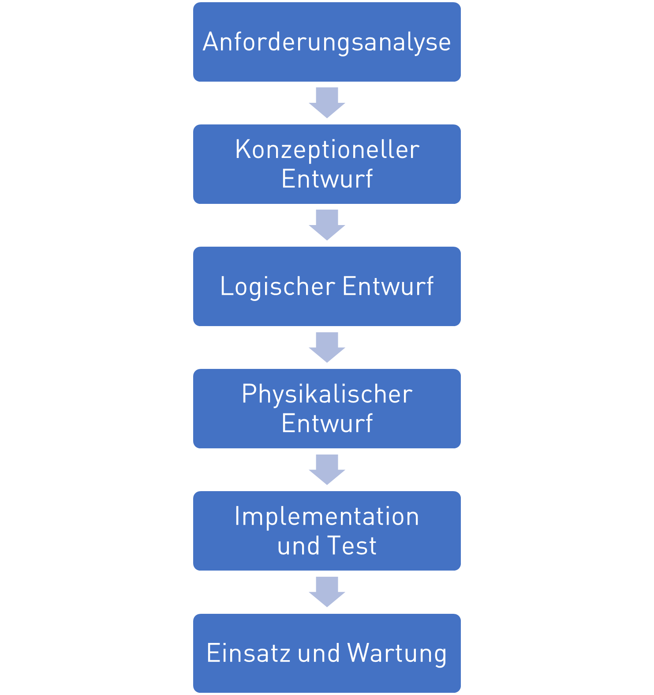
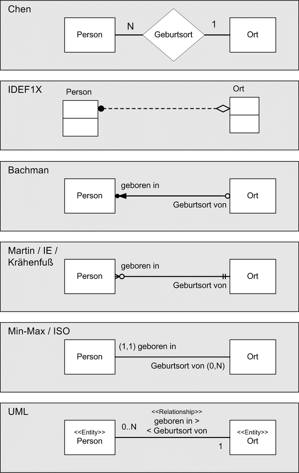

Relational Database Design#
Simple things should be simple. Complex things should be possible.
Alan Kay
Slides/PDF#
Design Approach#
The classic design approach for databases is similar to the waterfall model in software design. In this approach, the requirements and use cases are defined first:
Requirements analysis: What requirements and use cases does the database have?
Conceptual design: High-level design in which the required entities, attributes, and relationships are mapped in the ER diagram
Logical design: Detailed design of the concrete database schema for a specific DBMS that maps the actual tables in the database and is normalized
Physical design: Final determinations of primary indexes and additional search indexes for access optimization
Implementation and testing: Creating the database with SQL
Deployment and maintenance: Use of the database
What is decisive in the approach is that there is a high-level design at the conceptual stage, in which the functionally necessary entities are designed, and a subsequent detailed design with the logical and physical design, in which the actual tables in a DBMS are derived, which usually differ, as shown below.

ER Diagrams#
To represent database designs, one uses Entity-Relationship diagrams. In them, one visualizes the entities with their attributes and the relationships between the entities. There are different variants of ER diagrams, as shown in the figure below. What is common to all of them is that they depict entities, attributes (not shown here) and relationships with cardinalities. They differ primarily in notation rather than in the use of symbols.

We will use the UML notation below, which is based on UML class diagrams.
Classes receive the annotation
<<Entity>>to distinguish them from normal classesAttributes (table columns) are represented as class attributes with their data type
Primary keys are marked with PK
Relationship attributes (foreign keys) are modeled with associations
The reading direction of relationship types is indicated with
<<or>>Numbers on relationships indicate cardinality
An important difference to UML diagrams is that in ER diagrams there are no methods, inheritance, polymorphism, encapsulation, or class hierarchies. Therefore we do not apply corresponding symbols.
A simple example is shown in the following image. We have a person who lives in a place. The person has the attributes Ausweisnummer and a name. We use the Ausweisnummer as the primary key, since it is unique. The place has a postal code and a name. The postal code serves here as the primary key for simplicity (since a postal code can cover many municipalities or a place can have multiple postal codes, this is not ideal). As a relationship we denote here that a person lives in exactly one place. Note the reading direction >> here and the cardinalities 1-to-1 that appear at the start and end of the relationship.
Cardinalities#
In ER diagrams, the cardinality of relationships plays a key role, since it leads to different table representations. Cardinalities describe the number of minimal and maximal possible relationships between entities for this relationship. In general, the following cardinalities are distinguished:
| Cardinality | Example | ER Diagram |
| 1 to 1 | A person is born in at least one, at most one place. | |
| 1 to 0..1 | A person has died in zero or one place. | |
| 1 to 0..* | A person goes on vacation to zero or more places. | |
| 1 to 1..* | A person has previously been to at least one, at most many places. |
It should be noted that the reading direction (<< or >>) is important, since no statement is made about the cardinality of the reverse direction! In the above example, only a statement is made about how many places one person was in, and not about how many people can be in places.
Example: ER Conceptual Design for Geometric Objects#
As a design example, we refer to the geometry objects example discussed in the chapter Objektorientierung. We have the classes Point, Line and Polygon with the variants Triangle, Tetragon and Pentagon.
The Point has attributes the x and y coordinates of type float, both of which are public as annotated with +. Furthermore, there are different methods in Point, Line, and Polygon for calculating the distance, area, and length of the respective objects.
In the UML diagram we have depicted that a Polygon has the aggregation association with multiplicity 1 to 3..* to the class Point, i.e., a polygon is linked to at least three points. The Line is, in turn, associated with the Point class with the multiplicity 1 to 2, i.e., a line is associated with exactly two points.
The classes Triangle, Tetragon and Pentagon are subclasses of Polygon, which add no further functionality.
To design a database schema for these objects, we map them into an ER diagram by applying the conversion rules shown above.
We annotate the classes first with
<<Entity>>to mark them as such.We remove all methods, since ER diagrams do not support them.
We remove all encapsulation annotations
+,-, or#before attributesWe add primary keys to all entities
We convert the special association types Aggregation and Composition into simple associations
Since there is no inheritance in ER diagrams and DBMS, we need to decide how to handle the subclasses Triangle, Tetragon, and Pentagon. One possibility would be to introduce a new entity for each, built just like a Polygon. But this would lead to several redundant tables. This is necessary if the subclasses introduce their own attributes. Since they do not do this, we also do not need separate entities, but can incorporate them into the generic Polygon entity by introducing the attribute PolygonType, in which we can store whether it is a Triangle, Tetragon, Pentagon, or subtype.
We obtain the following conceptual design:
In the conceptual design there are three entity types. The entity Point still has x and y coordinates as attributes of type float. The entity Line has two relations to Point for the start point and end point. The entity Polygon has the relation to Point with cardinality 1 to 3..*, i.e., at least three points. It also has a new attribute PolygonType of type str to store the subtype. For all three entities we have defined a numeric primary key, since numeric indexes are the most efficient.
Normalization of Conceptual Designs to Logical Designs#
The normalization is an important step in the process of mapping a conceptual data model to a logical and physical data model. Its purpose is to minimize redundancies (storing the same fact multiple times) by creating new tables and linking them via new relations for
complex attributes (lists, dictionaries)
relations with high cardinality
redundant data (e.g., polygon type)
There are several normal forms, defined by progressively stricter conditions on the database schema:
1NF - First Normal Form: All attribute values are atomic — that is, each piece of information within a table gets its own column, and related information, such as the postal code and the city, or complex attributes like lists or dictionaries, are not stored in a single column.
2NF - Second Normal Form: Non-key attributes are fully functionally dependent on all primary keys — that is, only information that functionally depends on the key is stored in an entity. For example, for an invoice, the customer’s name is not stored directly, but belongs to a separate Customer entity, since a customer can have multiple invoices. When drawing an ER diagram and thinking about the entities, you usually automatically apply the Second Normal Form.
3NF - Third Normal Form: Non-key attributes depend only on the primary key — that is, redundant attributes that belong together should be stored together. So ZIP codes and place names tend to occur in pairs and should form a separate entity.
BCNF - Boyce-Codd Normal Form: All attributes on which other attributes depend are keys — that is, if several foreign keys occur in an entity and these depend on each other, this dependency is moved into its own entity. For example, if you store place names and ZIP codes in separate entities (because place names duplicate), you should not store the foreign keys ZIP and city name in the Customer entity, but still need the ZIP–City entity.
4NF - Fourth Normal Form: There are only trivial multivalued dependencies remaining — that is, if multivalued attributes occur with foreign keys or other multivalued attributes that have no functional relation, they are moved out. For example, in 4NF it is incorrect to store in one table an order’s shipping address, customer number, and item numbers, since the shipping address depends on the customer number but not on the item numbers. The correct design is two tables with shipping address and customer number, and one with item number and customer number.
5NF - Fifth Normal Form: There are no join dependencies remaining — that is, every join dependency between attributes and foreign keys is moved into its own table.
Usually only the first three normal forms are relevant in database design. Higher normal forms result in a very large number of small tables, which even for simple queries must be joined together, drastically limiting usability.
In our geometry example, we want to look at a few examples of violations of the first through third normal forms.
In the following ER diagram, we violate the first normal form because we define a complex attribute List<Punkt> instead of decomposing it into a relation.
In the second ER diagram we violate the second normal form, because we store the coordinates of the start and end points directly in the line, even though these points are represented as points and thus have a functional dependency. Here is the solution: move them into the Punkt entity and create relationships.
In the last example, we erroneously store the PolygonTyp attribute in the Point entity, even though it belongs to the Polygon entity.
Normalization of Cardinalities#
According to the first normal form, we must map cardinalities differently according to their degree. Simple cardinalities (0 or 1) can be stored as an attribute, while higher cardinalities >1 are mapped as a relation in a new entity. In both logical and physical design, it matters whether an attribute when storing a new entity in the database does not have to be specified (Nullable) or must be specified (Not Null).
| Cardinality | Example | ER Diagram |
| 1 to 1 | The relationships are represented by foreign keys in the entity from which the relationship starts, denoted by `>>`. The foreign key is `NOT NULL`, so an entry must ALWAYS be present. | |
| 1 to 0..1 | The relation is represented by a foreign key in the entity. The foreign key is `NULLABLE`, so an entry does not have to be present. | |
| 1 to 0..* | The relation is represented as a new entity with a foreign key. | |
| 1 to 1..* | The relation is represented as a new entity with a foreign key. At least one entry should exist (this is a consistency rule that cannot be enforced by a DBMS alone (there is otherwise a chicken-and-egg problem)). |
Example Geometry#
To convert the above-mentioned conceptual design for the geometry objects into a logical design, we must normalize the design. Let’s take another look at the design.
We have the three entities Linie, Punkt and Polygon with two 1:1 relationships from Linie to Punkt and a 1:3..*-relationship from Polygon to Punkt.
First, by applying the rules of 1NF and decomposing these relations according to the table mentioned above, we can represent the two 1:1 relationships from Linie to Punkt using foreign keys in the Linie entity.
The 1:3..*-relationships from Polygon to Punkt, however, cannot be directly mapped according to 1NF, since the multiplicity is greater than 1 and we must introduce a new entity. This entity (table) lists which polygons use which points. The new entity thus contains the two foreign keys and a new primary key. In the logical design we also include the foreign keys as attributes to represent them unambiguously.
In this draft, 2NF and 3NF are already satisfied.
However, we have many duplications (redundancies) with the attribute PolygonTyp, which can only take the values Triangle, Tetragon, and Pentagon, but must be stored as a new string each time. At the same time, we also want this attribute to only take these values and not be filled with gibberish.
Therefore, it makes sense to constrain the values here and to avoid duplication of strings by introducing a new entity PolygonType. This defines the base types Triangle, Tetragon, and Pentagon and assigns them a numeric primary key, which we reference in the entity Polygon as a foreign key.
Lastly, we also define for all attributes and foreign keys whether they are Nullable or NotNull.
We obtain the final logical design:
Wichtig zu erkennen in dem logischen Entwurf ist, dass wir jetzt nur noch 1:1-Relationen haben, also alle höherwertigen Kardinalitäten aufgelöst haben. Zusätzlich haben wir Redundanzen aufgelöst und haben jetzt ein sehr effizienten Datenbankentwurf.
Im Physikalischen Entwurf würde man diesem Entwurf jetzt noch weitere Informationen hinzufügen, wie zum Beispiel zusätzliche Zugangangsbeschränkungen oder Abfrageindizies. Zugangsbeschränkungen gibt es in den meisten DBMSs nur auf Entitätsebene und nicht auf Attributsebene (wie in UML), man kann also Beschränken welche Nutzer, welche Tabellen sehen, lesen, erzeugen, oder verändern können, aber nicht welche Spalten sie sehen.
Beim Entwurf von Abfrageindizies ist die Regel, dass man versucht alle häufig genutzten WHERE-Bedingungen, die man in SELECT-Anfragen in SQL benutzt, durch entsprechende Indizies beschleunigt werden.
Damit sind wir auch schon direkt im SQL Thema wo wir uns mit der Erzeugung von Tabellen beschäftigen wollen.